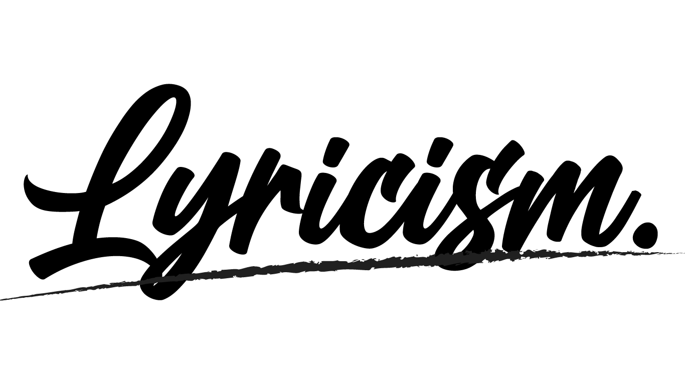

2020年代の分析
パンデミックや気候変動への対応が求められ、持続可能性とデジタル化が重要視される「変革と挑戦の時代」
総括と影響
2020年代のJ-POPは、デジタル社会を生きる若者たちの繊細な感情や、不確実な時代に向き合う人々の複雑な感情を、深い洞察を持って描写していると言えるでしょう。
直接的な感情表現を避け、情景や状況を通して心の動きを映し出し、SNS時代の新しいコミュニケーションや孤独感、
つながりへの渇望といったテーマが繊細に描かれている点が、2020年代のJ-POPの特徴です。

パンデミックや気候変動への対応が求められ、持続可能性とデジタル化が重要視される「変革と挑戦の時代」
2020年代のJ-POPは、デジタル社会を生きる若者たちの繊細な感情や、不確実な時代に向き合う人々の複雑な感情を、深い洞察を持って描写していると言えるでしょう。
直接的な感情表現を避け、情景や状況を通して心の動きを映し出し、SNS時代の新しいコミュニケーションや孤独感、
つながりへの渇望といったテーマが繊細に描かれている点が、2020年代のJ-POPの特徴です。